Portfolio
Navi Sohi: portfolio projects
Small, working systems that govern what AI agents may do. Every claim on these pages comes from a result that is committed in the repository and can be reproduced. What is simulated, unmeasured or not built is shown next to the numbers, not hidden.
Index
Projects

Edge Sentinel
Governed agents that act on the physical world
A decision cascade for an ESP32 sensor: a local hard limit, then Jev, then an LLM only when Jev is unsure. The model proposes; a fixed policy table decides how risky it is.
- 35 unit tests passing
- Firmware compiles (CI builds it)
- Simulated sensor data
- Never run on a board
- Live Jev and Haiku comparison: 48 readings
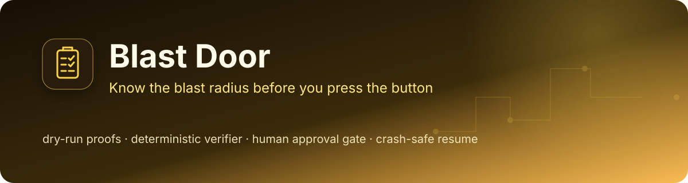
Blast Door
Know the blast radius before you press the button
Runbooks as typed state machines: a dry-run proof before every write, a deterministic verifier the planner cannot argue with, a second-person approval, and a loop that survives a process kill without repeating a write. Simulated environment.
- 185 offline tests passing
- Crash matrix: 30 of 30 kill points
- Environment SIMULATED
- No live LLM planner
- CI on Python 3.11 and 3.12 (result: Actions tab)
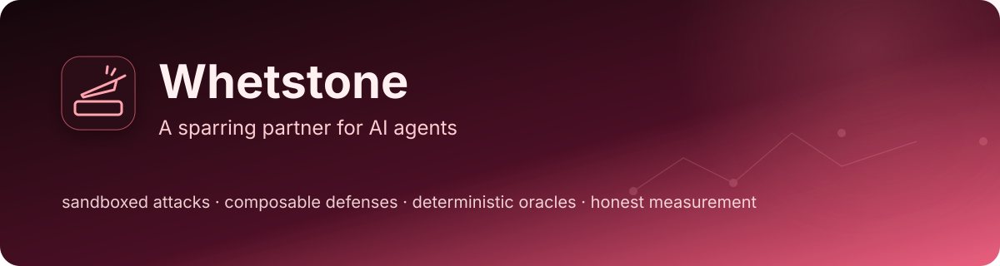
Whetstone
A sparring partner for AI agents
Attack success rate treated as an engineering measurement: deterministic oracles, paired seeds, false positives beside catch rates. A real model (run once) resisted all 165 attacks; the simulated 50.5% is an author assumption, not a finding.
- 587 offline tests passing (latest CI run)
- Simulated sandbox, tools and data
- Simulated target by default
- Real model run once: Claude Haiku 4.5, 0/165
- Adaptive attacker: full experiment not finished
- Defensive scope only

Jev Agent Router
Keyword vs LLM vs Jev: accuracy and latency, measured
On 111 hard hand-written messages (3 runs): keywords 42%, Jev 98% at 116 ms median, Claude Haiku 99% at 607 ms median. Accuracy of the two models is within noise; cost is not measured.
- 10 unit tests passing (latest CI run)
- Live Jev and Haiku runs on 2026-10-05, 3 runs
- Hand-written data, one annotator
- Cost not measured

SignalWeave AI
Six specialist agents, one deterministic policy gate, human-owned decisions
A policy-gated decision pipeline for technical programs: six narrow specialists, a deterministic gate, comparable options. Offline by default, synthetic data only, and it records no approvals.
- 48 tests passing (counted locally)
- Latest CI run passed (checked)
- Synthetic data only
- Default mode: rule sets, no model called
- Approve button records nothing
- Audit panel is sample data

switchboard
A git-native ticket router for a fleet of specialist AI agents
A one-shot ticket router for AI agents: tag-overlap first, a model only on zero overlap and only when asked. Corrections are recorded; risk tiers only warn.
- 78 tests passing offline (counted locally)
- Latest CI run passed (checked)
- Tests mock the model (SWITCHBOARD_MOCK=1)
- Jev backend tested offline only
- Risk tiers are advisory
- Livery comparison: author's own, unverified
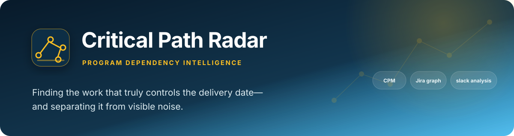
Critical Path Radar
Dependency intelligence that separates schedule risk from visible noise
CPM forward and backward pass over Jira dependency links, checked against a textbook answer. Not an agent, no LLM: it says whether a stalled item can actually move the end date.
- 10 unit tests passing
- CPM checked against a textbook network
- CI green on the latest commit when checked
- No LLM anywhere in the repo
- Self-created Jira links (3), not simulated
- Jira reading code has no tests
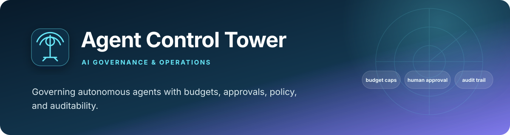
Agent Control Tower
Policy, budget, approval, and audit controls for autonomous agents
Retrofit governance for agents that already exist: a declarative action policy, a pre-call budget check, single-use expiring approvals and a hash-chained audit log. A prototype, not an enforcement boundary.
- 42 unit tests passing (latest CI run)
- 5 committed audit events
- Prototype: opt-in, not an enforcement boundary
- Retrofit claims partly unverified
- No approver identity or authentication
IT Agent Platform
Approval-first automation for modern IT operations
Propose, approve, execute as three separate audited steps: six specialist agents propose typed actions, a deterministic policy decides which need a different person to approve. A reference implementation with a mock executor, not a production control plane.
- 16 tests passing (latest CI run)
- Mock executor: no real system touched
- Reference implementation, not production
- Approver identity unauthenticated
- No live connector built

Executive Status Rollup
Rules decide the status, Claude only narrates it
A weekly RAG rollup from live Jira data: the status comes from unit-tested rules, Claude only writes the prose, and a week-over-week history makes a flip visible.
- 9 unit tests passing
- CI green on the latest commit when checked
- Live Jira data (PGMAUTO), not simulated
- Slack post ungoverned if agent-control-tower is not importable
- Narration vs status not checked in code
- No eval of the narration
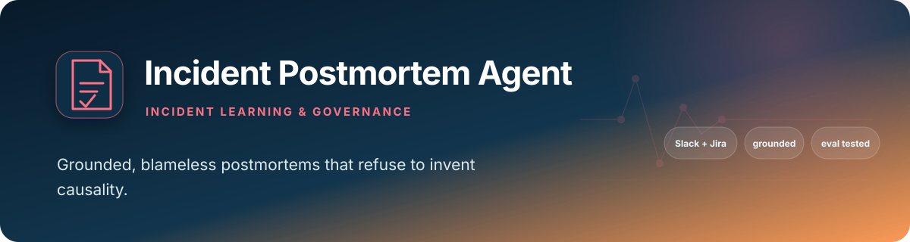
Incident Postmortem Agent
Blameless incident synthesis, prompted to refuse to invent causality
A single-call postmortem drafter with a five-fixture grounding eval. The saved run scored 4 of 5 and the one fail was the grader returning an empty tool call; the page says so.
- Eval 4 of 5 fixtures (single run)
- 13 offline tests passing (with requirements-dev.txt)
- CI green on the latest commit when checked
- Five synthetic fixtures (simulated threads)
- One Claude call, no check at generation time
- Live proof: one hand-posted incident

Slack Daily Brief
A Slack brief with an eval harness that caught its own hallucinations
A daily Slack summariser whose eval harness caught invented owners and severity: 5 of 10 fixtures passing before the prompt fix, 9 of 10 after, each a single run.
- Eval 50% to 90% (single runs, 10 fixtures)
- 9 unit tests passing (tracking.py only)
- CI green on the latest commit when checked
- Synthetic fixtures (simulated transcripts)
- Posts to Slack with no approval gate
- No budget cap set
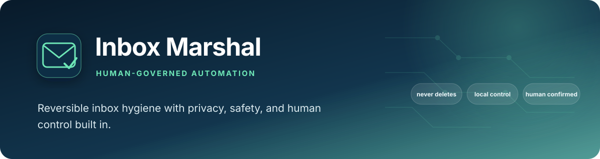
Inbox Marshal
Inbox hygiene with reversible automation by default
A deterministic pipeline with one LLM classifier step: scan changes nothing, apply confirms first, auto files labels only. Never deletes. Classification quality has no evaluation set yet.
- 14 unit tests passing (latest CI run)
- Never deletes
- Classification quality not measured
- Auto mode has no human approval
- Classifier and Gmail client untested
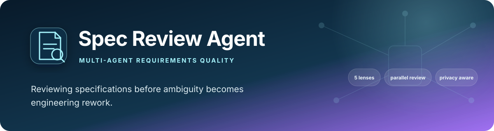
Spec Review Agent
Parallel pre-build review across ambiguity, feasibility, privacy, completeness, and ownership
Five narrow critic calls review a spec in parallel; plain Python merges the findings into a severity-ranked report. One real-document demo, and the critics themselves are unmeasured.
- 10 unit tests passing (report rendering only)
- Latest CI run passed (checked)
- One real-document demo, one run
- Critics not evaluated
- Claude calls not tested offline
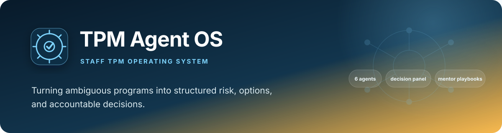
tpm-agent-os
Ambiguity in. Structure, risk, and a decision out.
A fixed six-stage pipeline for ambiguous program briefs: framing, risk map, build-vs-buy panel, status, redirect-or-kill, playbook. Independent lenses plus a judge, and no human gate.
- 12 tests passing offline (counted locally)
- Latest CI run passed (checked)
- Tests use canned fixtures (TPM_AGENT_MOCK=1)
- No human gate
- No evaluation of live output

muster
A git-native AI team you run locally
A local, no-database launcher for AI coding agents with per-runtime verification status, git worktree isolation and durable attempt records. Assignment is manual by design; risk tiers only warn.
- 51 tests passing offline (counted locally)
- Latest CI run passed (checked)
- 6 runtimes verified live, 2 documented only
- Risk tiers are advisory
- Success check proves a change exists, not that it is right
- No production mileage
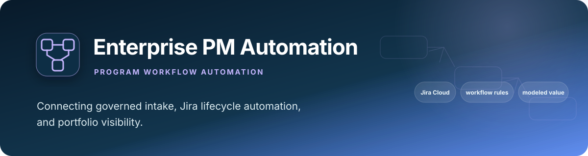
Enterprise PM Automation System
Governed Jira Epic intake and lifecycle automation, with modeled impact
Jira Epic intake and lifecycle automation as a rules engine. Impact figures are a modeled scenario, not telemetry, and the README admits capacity enforcement is design-only and there are no tests.
- Impact figures are modeled, not measured
- Status: reference implementation
- No automated tests (no tests/ directory)
- No CI workflow
- Capacity limits: design only, not in app/
- BRD gate advises; a Jira rule does the block
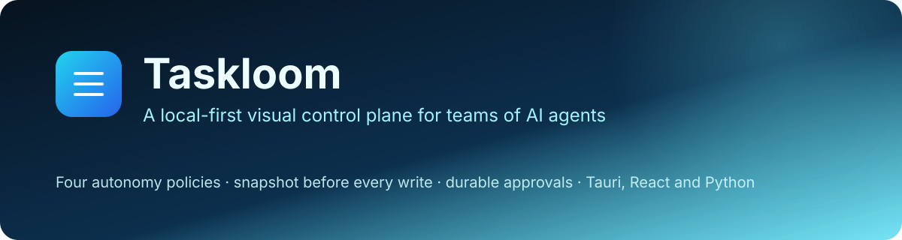
Taskloom
A local-first visual control plane for teams of AI agents
A local-first desktop control plane for teams of AI agents: four autonomy policies decide whether output may touch a file, every write is snapshotted first, and state survives restarts. v0.12.0, with CI and 114 automated tests; model output is faked in the tests.
- 114 automated tests: 77 Python/MCP + 37 React
- CI: last run on main passed when checked
- Release v0.12.0
- Model output is simulated in the tests
- Not signed or notarized
- Needs Python 3 and Ollama installed
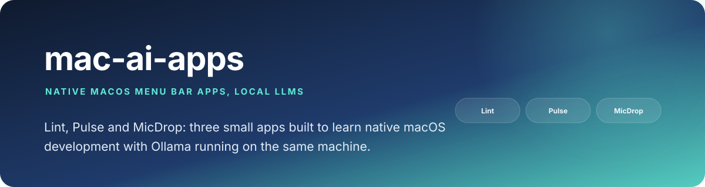
mac-ai-apps
Native macOS menu bar apps that use a local LLM
Three native macOS menu bar apps on a local Ollama model: Lint (clipboard cleaner), Pulse (Jira sprint brief) and MicDrop (voice dictation and commands). Tried by hand only: no automated tests, no CI, not packaged.
- 3 native macOS apps: Lint, Pulse, MicDrop
- No automated tests, no CI
- Tried by hand only
- MicDrop is a work in progress
- Not packaged or notarized
- macOS 15.5 target not built here
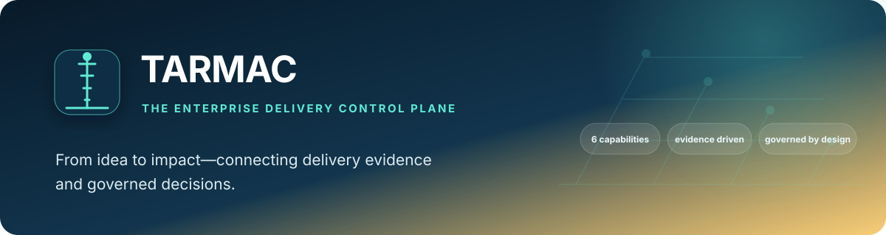
TARMAC
The Enterprise Delivery Control Plane
An early-stage reference implementation of an IT portfolio governance layer, with its own product site. Today it runs on hardcoded sample data: integrations with Jira, ServiceNow and Azure DevOps are not built, and nothing is persisted. What does run is a unit-tested lifecycle and launch-gate rules engine. This card links to the existing TARMAC site, not to a generated page.
- Early-stage reference implementation
- Sample data only (hardcoded)
- Jira, ServiceNow, Azure DevOps: not built
- No persistence yet
- Lifecycle rules engine unit-tested
- CI: last run on main passed when checked